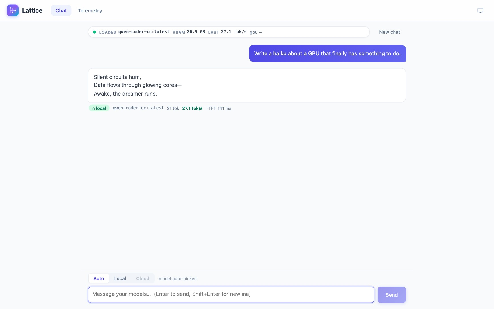

Lattice
A control plane for local AI models.
Routes each chat to a local model on Ollama or LM Studio and falls back to the cloud when the rig is down. Replies stream over server-sent events, tagged with the backend, tokens per second, time to first token and VRAM. Scheduled agents run saved prompts on a timer.
SvelteKit, TypeScript, OpenAI SDK, Ollama, Tailscale